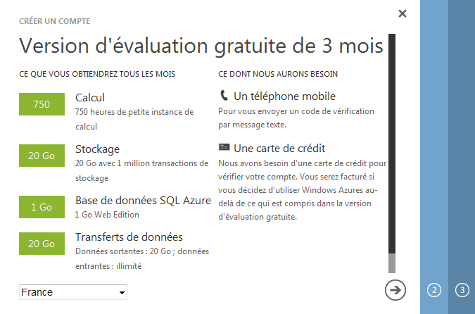

Comme son nom peut y faire penser, Azure Raytracer est un lanceur de rayons (raytracer dans la langue de Shakespeare) qui fonctionne sous Windows Azure. Vous voilà bien avancés. Qu'est-ce que Windows Azure ? Qu'est-ce qu'un Raytracer ? Ici, vous pouvez faire une recherche dans votre moteur de recherche préféré, ou bien tout simplement continuer à lire la suite de cette partie, parce que c'est précisément ce qu'on va voir.
Qu'est-ce que Windows Azure ?
Windows Azure, conformément à ce dont on pouvait se douter en lisant le nom et en voyant le logo est un produit de chez Microsoft. Mais contrairement à tous les autres produits Microsoft Windows, ce n'est pas un système d'exploitation et donc vous ne pouvez pas l'installer sur votre ordinateur.
Windows Azure est une plate-forme applicative "dans les nuages" (du cloud computing, si ça vous parle plus) qui fournit des services de type Platform as a service. Plus précisément deux types de services que je ne vais pas détailler :
Le lancer de rayon (anglais : ray tracing) est une technique de rendu en synthèse d'image simulant le parcours inverse de la lumière : on calcule les éclairages de la caméra vers les objets, puis vers les lumières, alors que la lumière va de la scène vers l'œil.
Cette technique reproduit les phénomènes physiques que sont la réflexion et la réfraction. Une mise en œuvre naïve du lancer de rayon ne peut rendre compte d'autres phénomènes optiques tels que les caustiques (taches lumineuses créées à l'aide d'une lentille convergente par exemple) et la dispersion lumineuse (la radiosité s'attaque à ce problème).
En revanche, contrairement à d'autres algorithmes de synthèse d'image, elle permet de définir mathématiquement les objets à représenter et non pas seulement par une multitude de facettes.
Exemple d'image générée par lancer de rayons avec POV-Ray. Source Wikipédia, domaine public.
Le fonctionnement exact est aussi donné sur Wikipédia, et pour ce qui nous intéresse il faut retenir ceci : dans le meilleur des cas, celui d'une image avec une seule source de lumière, cette technique nécessite de lancer au minimum deux rayons par pixel de l'image (celui entre la caméra et l'objet et celui entre l'objet et la source de lumière). Conséquence : si cette technique permet d'obtenir des images d'un réalisme inégalé avec les techniques 3D standard, elle demande aussi beaucoup de puissance de calcul pour le rendu de l'image.
Vous vous êtes donc intéressés à la synthèse d'images par lancer de rayon, sauf que vous n'avez pas l'argent pour acheter un ordinateur surpuissant dernier cri - dont la puissance ne vous servira que quelques heures - et pas le temps d'attendre des jours que votre image finisse d'être calculée. Ah. Comment faire ?
Azure Raytracer
Donc, si je résume, on a d'un côté une solution technique qui nous permet d'avoir une grosse puissance de calcul à disposition à la demande, et de l'autre une problème qui a d'énormes besoins ponctuels de calcul. Pourquoi ne pas combiner les deux ?
Eh bien on a là exactement le concept de Azure Raytracer.
Bon, c'est bien beau tout ça, mais ça ne m'avance pas à grand-chose. Je veux utiliser Azure Raytracer, comment est-ce que je fais ? C'est exactement ce que nous allons voir maintenant
Installation de Windows Azure
Les comptes gratuits 90 jours
Microsoft met à disposition des comptes d'essai gratuits pour 90 jours, avec les services suivants :
Calcul : 750 heures d'une petite instance de calcul
Stockage : 20 Go avec 50 000 transactions de stockage
Transferts de données : Données sortantes : 20 Go ; données entrantes : illimité
Base de données relationnelle : 1 Go de SQL Azure Web Edition
Contrôle d'accès : 100 000 transactions
Mise en cache : 128 Mo de cache
Pour en profiter, vous avez besoin :
D'un identifiant Windows Live
D'une carte bancaire (Visa, MasterCard ou American Express si vous êtes français, pour les autres pays je ne sais pas)
Cliquez donc sur le gros bouton vert pour vous inscrire. Vous tombez sur une page qui vous explique avec pertinence que vous ne disposez pas encore de compte Windows Azure :

Rien à faire ici. Pour continuer on clique sur la petite flèche et on obtient cet écran :
Je vous ai mis un exemple (avec un numéro bidon comme vous pouvez vous en douter), la mise en forme est automatique. Un clic sur le bouton Envoyer un message texte vous envoie un SMS de ce genre :
Citation : Le robot britannique numéro +447781470659
Veuillez utiliser le code 0000000 pour vérifier votre compte Windows Azure
Entrez ce numéro dans le champ qui est apparu et cliquez sur Vérifier le code. Évidemment ça ne passe pas à l'étape suivante mais se contente de dire que tout est OK, il faut cliquer sur la petite flèche pour continuer.
Admirez le serpentin bleu d'attente qui vous amène sur cette page :
Réflexe quand vous êtes sur une page qui vous demande des informations bancaires : est-elle sécurisée ? L'adresse commence bien par https et le navigateur ne hurle pas, je peux continuer.
Pour ce faire, vous allez avoir besoin non pas d'un, mais de deux fichiers ! En effet, l'installateur permet de déployer directement sur Windows Azure depuis son ordinateur. Téléchargez donc :
Votre profil de publication Windows Azure : https://windows.azure.com/download/publishprofile.aspx. Vous pouvez ignorer les instructions fournies et vous contenter d'enregistrer le fichier .publishsettings dans un coin de votre disque dur.
Ceci fait, lancez le fichier setup.exe. Il télécharge quelques informations sur Internet avant de vous offrir cette superbe fenêtre :
Indiquez l'emplacement de votre fichier .publishsettings dans le champ prévu à cet effet et cliquez sur Publish. Ceci lance l'installation et le déploiement du raytracer sur votre compte Azure. Si vous avez envie d'un café, c'est le moment, parce que la phrase qui annonce que "l'opération peut prendre quelques minutes" n'est pas un mensonge.
Une fois votre café terminé (et peut-être plus encore), le logiciel ouvre une page dans votre navigateur web préféré et vous donne une URL qui ne fonctionne pas : c'est celle de votre raytracer !
Quoi ? Mais... ça ne fonctionne pas ! J'obtiens un message d'erreur ! Qu'est-ce que j'ai raté ?!
Pas de panique ! Comme indiqué dans la fenêtre d'installation, c'est normal, il faut le temps que tout s'initialise. Partez prendre un autre café, dans quelques minutes, tout sera fonctionnel. Et alors, quand vous raffraîchirez votre page, vous tomberez sur la page de la victoire : votre raytracer installé et fonctionnel :
D'une instance fonctionnelle de Azure Raytracer avec son URL
D'un compte Facebook
Normalement, si vous êtes arrivés ici, vous avez déjà une instance de Azure Raytracer. Quant au compte Facebook, il y a de fortes chances pour que vous en ayez déjà un.
La participation proprement dite
Concept
Le fonctionnement est très très simple : on vous fournit un modèle de soleil, un sol et un fond. Vous pouvez choisir les images du sol et du fond, et déplacer la source lumière et le soleil. Avec ces quelques paramètres, le but du jeu est de générer l'image la plus belle possible - ou plus exactement, celle qui aura le plus de "like" Facebook.
Connectez-vous avec votre compte Facebook, vous obtenez ceci :
Notez que j'ai enlevé toute la décoration
Entrez les valeurs, cela génère une image. Vous pouvez modifier les paramètres et re-calculer l'image tant que vous n'avez pas validé définitivement votre participation.
Un exemple pour la route
Exemple naïf
Je vous propose un petit exemple. Essayons de voir ce que ça donne si j'utilise le logo de ce site comme image de sol et zozor en fond :
Je rentre mes paramètres :
Je clique sur Générer l'image et patiente le temps du calcul... et soudain, miracle de la technologie moderne, l'image s'affiche devant mes yeux ébahis !
Mouais. Pas terrible comme résultat. Que remarque-t-on ?
Que les images ont une résolution trop basse et que du coup on voit de gros pixels.
Qu'elles ont été écrasées, pour un meilleur rendu elles devraient être carrées.
Que le soleil en position centrale (0, 0, 0) est à moitié coupé par le sol, ce qui n'est pas du meilleur effet.
Que la lumière en position (100, 100, 100) se trouve au-dessus, devant nous et à droite. Du coup, elle provoque des ombres assez inesthétiques.
Améliorons notre exemple
Que peut-on faire pour améliorer le rendu final ?
Le levier le plus efficace que vous avez, c'est la résolution des deux textures que vous avez (et ce qu'elles représentent, bien sûr). Les autres paramètres ne joueront que sur la composition et la luminosité de votre scène. Exemple de l'influence de la qualité des textures : prenons un logo et un Zozor en meilleures qualités :
Ne lui dites pas qu'il est gros, il a une forte ossature
Essayons aussi de placer correctement notre soleil et notre lumière : le soleil dans le sol et la lumière derrière la scène ne sont pas les meilleures idées de composition que l'on pourrait avoir.
D'autre part, la lumière dans la scène précédente est en réalité très éloignée de nos objets. À 10 sur une coordonnée, vous êtes déjà à peu près surs d'être sortis de l'image. Je vous propose donc de tester un nouveau rendu avec les coordonnées suivantes :
Soleil : (2, 3, 2) : décalé vers le haut, la droite et le fond de l'image.
Lumière : (10, 10, -10) : en haut à droite, derrière la caméra, pour un éclairage direct de la scène.
Un peu de calcul nous donne :
Il faut vraiment une bonne définition pour l'image du sol, contrairement à celle utilisée
Bien que ce ne soit pas absolument parfait, c'est déjà mieux, n'est-ce pas ? Les rectangles noirs disgracieux sont là car en réalité le Zozor est sur fond transparent, mal géré par le moteur de rendu.
Ceci marque la fin de l'exemple, à vous de jouer !
Ce tuto se finit ici.
Pour ceux qui sont intéressés par la technique qui peut exister derrière, je vous conseille les liens suivants :